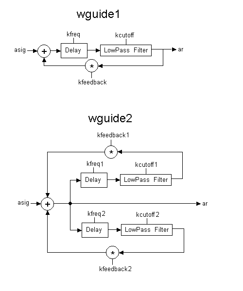
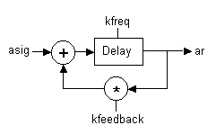

THIS IS A LISTING OF ALL OPCODES IMPLEMENTED BY GABRIEL MALDONADO
MIDI-RELATED OPCODES
DURATION EXTENSION OF MIDI NOTES
GENERIC OPCODES
PHYSICAL MODELING WAVEGUIDE BLOCKS
AUDIO RATE EXPONENTIAL ENVELOPE GENERATOR
MEMORY OPTIMIZED 16-BIT SOUND USAGE
INFORMATIONS ABOUT SOUNDIFILE FUNCTION TABLES
SCORE OPCODES AND OTHER SCORE STUFF
| MIDI CONTROLLERS |
| midic7, midic14, midic21, ctrl7, ctrl14, ctrl21
slider8, slider16, slider32, slider64, slider8f, slider16f, slider32f, slider64f, s16b14, s32b14 |
| MIDI MICRO TUNING |
| cpstmid |
| MIDI GENERATORS |
| noteon, noteoff, ondur, ondur2
outic, outkc, outic14, outkc14, outipb, outkpb, outiat, outkat, outipc, outkpc, outpiat, outkpat |
| MIDI IN/OUT FLOW MANAGERS |
| midiin |
| DURATION EXTENSION OF MIDI NOTES |
| xtratim, release |
| SUBROUTINE CALL RELATED |
| call, calld, callm, callmd
parmck, parmtk, parmca, parmta, rtrnck, rtrntk, rtrnca, rtrnta |
| WRAPPING SIGNALS AROUND |
| wrap, mirror |
| INTERPOLATOR |
| ntrpol |
| PHYSICAL MODELING WAVEGUIDE BLOCKS |
| wguide1, wguide2 |
| AUDIO RATE EXPONENTIAL ENVELOPES GENERATOR |
| expsega |
| MEMORY OPTIMIZED 16-BIT SOUND USAGE |
| loscil2 |
| PRINT K-RATE VALUES TO SCREEN |
| printk2 |
| PRECISE OSCILLATORS |
| poscil, lposcil |
| FM OSCILLATORS |
| foscili2 |
| FILTERS |
| lpres, lpresx |
| FAST POWER OF TWO FUNCTIONS |
| powoftwo, logbtwo |
| INFORMATIONS ABOUT SOUNDIFILE FUNCTION TABLES |
| ftlen2 |
| NEW GEN FUNCTIONS |
| GEN22 |
| TRIGGER BOOLEAN GENERATOR |
| trigger |
| MULTI-TRACK FILES |
| fout |
| ARTIFICIAL FOLDOVER |
| fold |
| SCORE OPCODES |
| { } - Nested Loops |
| NESTED MACROS |
| New Macro Syntax |
| MACRO ARITHMETIC |
| T - Table operator |
idest midic7 ictlno, imin, imax [, ifn]
kdest midic7 ictlno, kmin, kmax [, ifn]
idest midic14 ictlno1, ictlno2, imin, imax [, ifn]
kdest midic14 ictlno1, ictlno2, kmin, kmax [, ifn]
idest midic21 ictlno1, ictlno2, ictlno3, imin, imax [, ifn]
kdest midic21 ictlno1, ictlno2, ictlno3, kmin, kmax [, ifn]
idest ctrl7 ichan, ictlno, imin, imax [,ifn]
kdest ctrl7 ichan, ictlno, kmin, kmax [,ifn]
idest ctrl14 ichan, ictlno1, ictlno2, imin, imax [,ifn]
kdest ctrl14 ichan, ictlno1, ictlno2, kmin, kmax [,ifn]
idest ctrl21 ichan, ictlno1, ictlno2, ictlno3, imin, imax [,ifn]
kdest ctrl21 ichan, ictlno1, ictlno2, ictlno3, kmin, kmax [,ifn]
DESCRIPTION
Return precise signal from a MIDI slider.
INITIALIZATION
idest - output signal
ichan - MIDI channel (1-16). In (i)ctrl14 and (i)ctrl21 all the controllers used in an opcode instance must be of the same channel
ictlno - midi controller number (1-127)
ictlno1 - most-significant byte controller number (1-127)
ictlno2 - in midic14: less-significant byte controller number (1-127); in midic21: mid-significant byte controller number (1-127)
ictlno3 - less-significant byte controller number (1-127)
imin - user-defined minimum floating-point value of output
imax - user-defined maximum floating-point value of output
ifn (optional) - table to be read when indexing is required. Table must be normalized. Output is scaled according to max and min val.
PERFORMANCE
kdest - output signal
kmin - user-defined minimum floating-point value of output
kmax - user-defined maximum floating-point value of output
midic7 (i and k rate 7 bit midi control) allows floating point 7 bit midi signal scaled with a minimum and a maximum range. They also allow optional non-interpolated table indexing.
In midic7 minimum and maximum values can be varied at krate.
midic14 (i and k-rate 14 bit midi control) does the same as the above with 14 bit precision.
midic21 (i and k rate 21 bit midi control) do the same as the above with 21 bit precision.
midic14 and midic21 can use optional interpolated table indexing. They require two or three midi controllers as input.
Warnig! Don't use (i)midicXX opcodes within a sco-activated i-statement or Csound will crash. Instruments containing (i)midicXX opcodes can be only activated by a MIDI note-on message. Use (i)ctrlXX opcodes if you need to include them in a sco-oriented instrument instead.
ctrl7, ctrl14, ctrl21 are very similar to midicXX opcodes the only differeces are:
MIDI channel is the same for all the controller used in a single (i)ctrl14 or (i)ctrl21 opcode.
Single slider control initialization
initc7 ichan, ictlno, ivalue
initc14 ichan, ictlno1, ictlno2, ivalue
initc21 ichan, ictlno1, ictlno2, ictlno3, ivalue
DESCRIPTION
Initializes MIDI controller ictlno with ivalue
INITIALIZATION
ichan - midi channel (1-16)
ictlno - controller number (initc7)
ictlno1 - MSB controller number
ictlno2 - in initc14 LSB controller number; in initc21 Medium Significant Byte controller number
ictlno3 - LSB controller number
ivalue - floating point value (must be within 0 to 1)
initc7, initc14, initc21 can be used togheter with both (i)midicXX and
(i)ctrlXX opcodes for initializing the first controllers' value.
Ivalue argument must be set with a number within 0 to 1. An error occurs if it is not.
Use the following formula to set ivalue according with (i)midicXX and (i)ctrlXX min and max range:
ivalue = (initial_value - min) / (max - min)
noteon ichn, inum, ivel
noteoff ichn, inum, ivel
ondur ichn, inum, ivel, idur
ondur2 ichn, inum, ivel, idur
DESCRIPTION
send note-on and note-off messages to the MIDI OUT port.
(warning! these opcodes have been renamed in to avoid namespace pollution. Before noteon was ion, noteoff was ioff, ondur was iondur and ondur2 was iondur2).
INITIALIZATION
ichn - MIDI channel number (1-16)
inum - note number (0-127)
ivel - velocity (0-127)
idur - duration in seconds beetween noteon and relative noteoff messages
PERFORMANCE
ion (i-rate note on) and ioff (i-rate note off) are the simplest MIDI OUT opcodes.
ion sends a MIDI noteon message to MIDI OUT port, and ioff sends a noteoff message.
A ion opcode must always be follwed by an ioff with the same channel and number inside the same instrument, otherwise the note will play endlessly.
ion and ioff are useful only when introducing a timout statement to play a non zero duration MIDI note. For most purposes it is better to use iondur and iondur2.
iondur and iondur2 (i-rate note on with duration) send a note-on and a note-off MIDI message both with the same channel, number and velocity. A note-off message is sent after idur seconds are elapsed by the time iondur was activated.
iondur differs from iondur2 in that iondur truncates note duration when current instrument is deactivated by score or by realtime playing, whereas iondur2 will extend performance time of current instrument until idur seconds have elapsed.
In realtime playing it is suggested to use iondur also for undefined durations, giving a large idur value.
Any number of iondur or iondur2 opcodes can appear in the same Csound instrument, allowing chords to be played by a single instr.
moscil kchn, knum, kvel, kdur, kpause
midion kchn, knum, kvel
DESCRIPTION
Send stream of note-on and note-off messages to the MIDI OUT port.
(Note that midion opcode was previously named kon. This opocode has been renamed to avoid namespace pollution).
PERFORMANCE
kchn - MIDI channel number (1-16)
knum - note number (0-127)
kvel - velocity (0-127)
kdur - note duration in seconds
kpause - pause duration after each noteoff and before new note in seconds
moscil and kon are the most powerful MIDI OUT opcodes.
moscil (midi oscil) plays a stream of notes of kdur duration. Channel, pitch, velocity, duration and pause can be controlled at k-rate, allowing very complex algorythmically generated melodic lines.
When current instrument is deactivated, the note played by current instance of moscil is forcely truncated.
midion (before called kon i.e. k-rate note on) plays MIDI notes with current kchn, knum and kvel. These arguments can be varied at k-rate. Each time the MIDI converted value of any of these arguments changes, last MIDI note played by current instance of kon is immediately turned off and a new note with the new argument values is activated.
This opcode, as well as moscil, can generate very complex melodic textures if controlled by complex k-rate signals.
Any number of moscil or kon opcodes can appear in the same Csound instrument, allowing a counterpoint-style polyphony within a single instrument.
outic ichn, inum, ivalue, imin, imax
outkc kchn, knum, kvalue, kmin, kmax
outic14 ichn, imsb, ilsb, ivalue, imin, imax
oukc14 kchn, kmsb, klsb, kvalue, kmin, kmax
outipb ichn, ivalue, imin, imax
outkpb kchn, kvalue, kmin, kmax
outiat ichn, ivalue, imin, imax
outkat kchn, kvalue, kmin, kmax
outipc ichn, iprog, imin, imax
outkpc kchn, kprog, kmin, kmax
outipat ichn, inotenum, ivalue, imin, imax
outkpat kchn, knotenum, kvalue, kmin, kmax
DESCRIPTION
Send a single Channel message to the MIDI OUT port.
INITIALIZATION AND PERFORMANCE
ichn, kchn - MIDI channel number (1-16)
inum, knum - controller number (0-127 for examp. 1 = ModWheel; 2 = BreathControl etc.)
ivalue, kvalue - floating point value
imin, kmin - minimum floating point value (converted in midi integer value 0)
imax, kmax - maximum floating point value (converted in midi integer value 127 (7 bit) or 16383 (14 bit))
imsb, kmsb - most significant byte controller number when using 14 bit parameters
ilsb, klsb - less significant byte controller number when using 14 bit parameters
iprog, kprog - program change number in floating point
inotenum, knotenum - MIDI note number (used in polyphonic aftertouch messages)
ioutc and koutc (i and k-rate midi controller output) send controller messages to MIDI OUT device.
ioutc14 and koutc14 (i and k-rate midi 14 bit controller output) send a pair of controller messages. These opcodes can drive 14 bit parameters on MIDI instruments that recognize them. The first control message contains the most significant byte of i(k)value argument while the second message contains the less significant byte.
i(k)msb and i(k)lsb are the number of the most and less significant controller.
ioutpb and koutpb (i and k-rate pitch bend output) send pitch bend messages.
ioutat and koutat (i and k-rate aftertouch output) send aftertouch messages.
ioutat and koutat (i and k-rate aftertouch output) send aftertouch messages.
ioutpc and koutpc (i and k-rate program change output) send program change messages.
ioutpat and koutpat (i and k-rate polyphonic aftertouch output) send polyphonic aftertouch messages. These opcodes can drive a different value of a parameter for each note currently active. They work only with MIDI instruments which recognize them.
N.B. All these opcodes can scale the i(k)value floating-point argument according with i(k)max and i(k)min values. For example, setting i(k)min = 1.0 and i(k)max = 2.0, when i(k)value argument receives a 2.0 value, the opcode will send a 127 value to MIDI OUT device, while when receiving a 1.0 it will send a 0 value.
I-rate opcodes send their message once during instrument initialization.
K-rate opcodes send a message each time the MIDI converted value of argument i(k)value changes.
mclock ifreq
mrtmsg imsgtype
DESCRIPTION
Send System Realtime messages to the MIDI OUT port.
INITIALIZATION
ifreq - clock message frequency rate in Hz
imsgtype - type of real-time message:
1 sends a START message (0xFA);
2 sends a CONTINUE message (0xFB);
0 sends a STOP message (0xFC);
-1 sends a SYSTEM RESET message (0xFF);
-2 sends an ACTIVE SENSING message (0xFE)
PERFORMANCE
mclock (midi clock) sends a MIDI CLOCK message (0xF8) every 1/ifreq seconds. So ifreq is the frequency rate of CLOCK messages in Hz.
mrtmsg (midi realtime message) sends a realtime message once, in init stage of current instrument. imsgtype parameter is a flag to indicate the message type (see above, in ARGUMENTS description).
DURATION EXTENSION OF MIDI NOTES
xtratim iextradur
kflag release
DESCRIPTION
Extend the duration of realtime generated events and handle their extra life.
INITIALIZATION
iextradur - additional duration of current instrument instance
PERFORMANCE
xtratim extends current MIDI-activated note duration of iextradur seconds after the corresponding note-off message has deactivated current note itself.
This opcode has no output arguments.
release outputs current note state. If current note is in the release stage (i.e. if its duration has been exetended with xtratim opcode and if it has only just deactivated), kflag output argument is set to 1, else (in sustain stage of current note) is set to 0.
These two opcodes are useful for implementing complex release-oriented envelopes.
Example:
instr 1 ;allows complex ADSR envelope with MIDI events inum notnum icps cpsmidi iamp ampmidi 4000 ; ;############## complex envelope section ############## xtratim 1 ;extra-time, i.e. release dur krel init 0 krel release ;outputs release-stage flag (0 or 1 values) if (krel > .5) kgoto rel ;if in relase-stage goto relase section ; ;************ attack and sustain section *********** kmp1 linseg 0,.03,1,.05,1,.07,0,.08,.5,4,1,50,1 kmp = kmp1*iamp kgoto done ; ;************ release section ********************** rel: kmp2 linseg 1,.3,.2,.7,0 kmp = kmp1*kmp2*iamp done: ;################################################### ; a1 oscili kmp, icps, 1 out a1 endin
idest wrap isig, ilow, ihigh
kdest wrap ksig, klow, khigh
adest wrap asig, klow, khigh
idest mirror isig, ilow, ihigh
kdest mirror ksig, klow, khigh
adest mirror asig, klow, khigh
DESCRIPTION
Wraps the signal in various ways (similar to limit opcode by Robin Whittle).
INITIALIZATION - PERFORMANCE
xdest - output signal
xsig - input ignal
xlow - low threshold
xhigh - high threshold
mirror "reflects" the signal that exceeds low and high thresholds.
wrap wraps-around the signal that exceeds low and high thresholds.
These opcodes are useful in several situations, such as for table indexing and for clipping and modeling irate, krate or arate signals.
wrap are also useful for wrapping-around tables data when maximum index is not a power of two (see table and tablei).
Another use of wrap is in cyclical event repeating with arbirary cycle length.
DESCRIPTION
this function is the same as ftlen( ) but operates also with deferred-allocation function size with GEN1 and GEN22 (see them for more informations).
DESCRIPTION
This function returns the number of samples effectively loaded by GEN01 or GEN22 from a file. This function is useful when table length is a power of two (i.e. not deferred allocation is used) larger than the file sample number of the file.
DESCRIPTION
This function returns the sampling-rate of a GEN01 or GEN22 generated table. The sampling-rate is determined from the header of the original file. If the original file has not header, ftsr returns 0.
ar1 [,ar2] loscil2 xamp, kcps, ifn[, ibas] [,imod1,ibeg1,iend1] [, imod2,ibeg2,iend2]
DESCRIPTION
Read sampled sound (mono or stereo) from a table of 16-bit integer samples, with optional sustain and release looping. Uses 16-bit integer table (see GEN 22).
INITIALIZATION
See loscil for details.
PERFORMANCE
See loscil for details.
N.B.
This opcode is almost identical to loscil, the only difference is loscil2 uses 16-bit integer function table (see GEN 22) for storing samples, increasing realtime performance and reducing sample-memory consumption in half.
WARNING! You MUST use only GEN 22 to allow this opcode operates correctly!
ar fof3 xamp, xfund, xform, koct, kband, kris, kdur, kdec, iolaps, ifna, ifnb, itotdur, kphs, kgliss
DESCRIPTION
Audio output is a succession of sinusoid bursts initiated at frequency xfund with a spectral peak at xform. For xfund above 25 Hz these bursts produce a speech-like formant with spectral characteristics determined by the k-input parameters. For lower fundamentals this generator provides a special form of granular synthesis.
fof3 is identical to fof, except that the optional arguments iphs and iform are required k-rate arguments, kphs and kgliss, allowing granular synthesis and grain glissandi.
INITIALIZATION and PERFORMANCE
see fof, fof2 and fog
N.B.
fof3 is identical to fof2, except that:
1) samples of ifna are lineary interpolated to icrease sound quality and to lower distortion
2) ifna argument must refer to a GEN22 generated table (16-bit integers stored in RAM). This halves RAM need for sample-functions.
See fof, fof2 and fog for more informations.
Transfer data from a soundfile into a function table using 16-bit integers for storing it in RAM.
f # time size -22 filcod skiptime format channel
for more information see GEN 01.
This gen-function is almost identical to GEN01. The only difference is GEN22 can only read 16 bit integer samples in mono or stereo and stores them in RAM keeping 16-bit integer format This halves RAM need. Very useful for LONG samples.
For now GEN22 can operate only with loscil2, lposcint and fof3 opcodes . You must always suppress normalization by using a negative GEN number, otherwise you will obtain a meaningless sequence of 1 , -1 and 0 integer values!
WARNING! The only opcodes which can use GEN22-generated functions are loscil2, lposcint and fof3. You must rescale the output of loscil2 and fof3 opcodes, when upgrading instruments written with the older opcodes (i.e. loscil and fof2) otherwise they could surpass the range limit of output.
Don’t attempt to use GEN22 with any other opcode (for now).
printk2 kvar [, numspaces]
INITIALIZATION
numspaces - number of space characters printed before the value of kvar
PERFORMANCE
kvar - signal to be printed
Derived from Robin Whittle's printk, prints a new value of kvar each time kvar changes. Useful for monitoring MIDI control changes when using sliders.
Warning! don't use this opcode with normal, continuously variant k-signals, because it can hang the computer, as the rate of printing is too fast.
ar lpres asig, kcutoff, kresonance [,istor]
ar lpresx asig, kcutoff, kresonance [, inumlayer, istor]
DESCRIPTION
lpres is a resonant lowpass filter.
lpresx is equivalent to more layer of lpres, with the same arguments, serially connected.
INITIALIZATION
inumlayer - number of elements of lpresx stack. Default value is 4. Maximum value is 10
istor - initial disposition of internal data space.
A zero value will clear the space; a non-zero value will allow previous information to remain. The default value is 0.
PERFORMANCE
ar - output signal
asig - input signal
kcutoff - filter cutoff frequency point
kresonance - resonance amount
lpres is a resonant lowpass filter derived from a Hans Mikelson´s orchestra.
This implementation is very much faster than implementing it in Csound language, and it allows kr lower than sr. kcutoff is not in cps and kresonance is not in dB, so experiment for finding best results.
lpresx is equivalent to more layer of lpres, with the same arguments, serially connected. Using a stack of more filters allows a sharper freqency cutoff. It is very faster than using more lpres instances in Csound orchestra, because only one initialization and 'k' cycle are needed at time, and the audio loop falls enterely inside the cache memory of processor.
ar tonex asig, khp[, inumlayer, istor]
ar atonex asig, khp[, inumalayer, istor]
ar resonx asig, kcf, kbw[, inumlayer, iscl, istor]
INITALIZATION
inumlayer - number of elements of filter stack. Default value is 4. Maximum value is 10
isig - some as tone, atone and reson
istor - some as tone, atone and reson
iscl - some as reson
PERFORMANCE
ar - output signal
asig - input signal
khp - some as tone, atone
kcf - some as reson
kbw - some as reson
tonex, atonex and resonx are equivalent to more layer of tone, atone and reson, with the same arguments, serially connected.
Using a stack of more filters allows a sharper frequency cutoff.
They are very faster than using more instances in Csound orchestra of old opcodes,because only one initialization and 'k' cycle are needed at time, and the audio loop falls enterely inside the cache memory of processor.
ar poscil kamp, kcps, ift [,iphs]
kr poscil kamp, kcps, ift [,iphs]
ar poscil3 kamp, kcps, ift [,iphs]
kr poscil3 kamp, kcps, ift [,iphs]
ar lposcil kamp, kfreqratio, kloop, kend, ift [,iphs]
ar lposcil3 kamp, kfreqratio, kloop, kend, ift [,iphs]
ar lposcint kamp, kfreqratio, kloop, kend, ift [,iphs]
(Note that poscil and lposcil opcode were previously named posc and lposc. These opocodes have been renamed to avoid namespace pollution. poscil3 and lposcil3 are cubic interpolated versions of poscil and lposcil by John Fitch).
INITALIZATION
ift - function table number
iphs - initial phase (in samples)
PERFORMANCE
ar - output signal
kamp - amplitude
kcps - frequency
kfreqratio - multiply factor of table frequency (for example: 1 = original frequency, 1.5 = a fifth up , .5 = an octave down)
kloop - loop point (in samples)
kend - end loop point (in samples)
poscil (precise oscillator) is the same as oscili but allows hugely more precise frequency control (especially when using long tables and low frequency values). It uses floating-point table indexing instead of integer math, differently by oscil and oscili. It is only a bit slower than oscili.
lposcil (loop oscillator) allows to vary in k rate the starting and ending point of a sample contained in a table. This can be useful when reading samples loop of a wavetable whose repeat speed can be varied during the performance.
lposcint is the same as lposcil, but read integer stored sample tables (GEN22) to reduce RAM memory needs.
ar wguide1 asig, kfreq, kcutoff, kfeedback;
ar wguide2 asig, kfreq1, kfreq2, kcutoff1, kcutoff2, kfeedback1, kfeedback2
(Note that wguide1 and wguide2 were previously named physic1. and physic2. These opocodew have been renamed to avoid namespace pollution).
DESCRIPTION
Simple waveguide blocks (see picture)

PERFORMANCE
wguide1 is the most elemental waveguide model consisting of one delay line and one first-order lowpass filter.
wguide2 is a model of beaten plate consisting of two parallel delay lines and two first-order lowpass filters. The two feedabak lines are mixed and sent to the delay again each cycle.
asig is the input of excitation noise, kfreq the frequency (i.e. the inverse of delay time), kcutoff is the filter cutoff frequency in Hz and kfeedback is the feedback factor.
Implementing waveguide algoritms as opcodes, instead of as orc instr, allows the user to set kr different than sr, allowing better performance particulary when using real-time. (see also the block diagram included in 'physic.bmp' picture)
kout trigger ksig, kthreshold, kmode
(previously called trig).
DESCRIPTION
informs when a krate signal crosses a threshold
PERFORMANCE
kout - output signal (a stream of zeroes with some 1)
ksig - input signal
kthreshold - trigger threshold
kmode - can be 0 , 1 or 2
Normally trigger outputs zeroes: only each time ksig crosses kthreshold trigger outputs a 1.
There are three modes of using trigger:
kmode = 0 - (down-up) trigger outputs a 1 when current value of ksig is higher than kthreshold whereas old value of ksig was equal or lower than kthreshold
kmode = 1 - (up-down) trigger outputs a 1 when current value of ksig is lower than kthreshold whereas old value of ksig was equal or higher than kthreshold
kmode = 2 - (both) trigger outputs a 1 in both the two previous cases.
kstatus, kchan, kdata1, kdata2 midiin
DESCRIPTION
Returns a generic midi message received by the midi in port
PERFORMANCE
kstatus - the type of midi message. Can be:
128 (note off),
144 (note on),
160 (polyphonic aftertouch),
176 (control change),
192 (program change),
208 (channel aftertouch),
224 (pitch bend)
or 0 if no midi message are pending in the MIDI IN buffer.
kchan - midi channel (1-16)
kdata1, kdata2 - message-dependent data values
midiin has no input arguments, because it reads at the midi in port implicitly. It works at k-rate. Normally (i.e. when no messages are pending) kstatus is zero, only each time midi data are present in the midi in buffer, kstatus is set to the type of the relative messages.
midiout kstatus, kchan, kdata1, kdata2
DESCRIPTION
sends a generic midi message to the midi out port
PERFORMANCE
kstatus - the type of midi message. Can be:
128 (note off),
144 (note on),
160 (polyphonic aftertouch),
176 (control change),
192 (program change),
208 (channel aftertouch),
224 (pitch bend)
or 0 when no midi messages must be sent to the MIDI OUT port.
kchan - midi channel (1-16)
kdata1, kdata2 - message-dependent data values
midiout has not output arguments, because it sends the message to the midi out port implicitly. It works at k-rate. It sends a midi message only when kstatus is different than zero.
Warning! Normally kstatus should be set to 0, only when the user intend to send a midi message, it can be set to the corresponding message type number.
midion2
midion2 kchn, knum, kvel, ktrig
DESCRIPTION
sends note on and off messages to the midi out port when triggered by a value different than zero.
(Note that midion2 opcode was previously named kon2. This opocode has been renamed to avoid namespace pollution).
PERFORMANCE
kchn - midi channel
knum - midi note number
kvel - note velocity
ktrig - trigger input signal (normally 0)
Similary to midion, this opcode sends note-on and note-off messages to the midi out port, but midion2 does it only when ktrig is different than zero. This opcode is thinked to work toghether with the output of the trig opcode.
-----------------------------------------------------------
nrpn kchan, kparmnum, kparmvalue
DESCRIPTION
sends a nprn (Non Registered Parameter Number) message to the midi out port each time one of the input arguments changes.
PERFORMANCE
kchan - midi channel
kparmnum - number of NRPN parameter
kparmvalue - value of NRPN parameter
This opcode sends new message when the MIDI translated value of one of the input arguments changes. It operates at k-rate. Useful with the midi instruments that recognize NRPNs (for example with the newest sound-cards with internal midi synthesizer such as SB AWE32, AWE64, GUS etc. in which each patch parameter can be changed during the performance via NRPN)
mdelay kstatus, kchan, kdata1, kdata2, kdelay
DESCRIPTION
A midi delay
PERFORMANCE
kstatus - status byte of midi message to be delayed
kchan - midi channel (1-16)
kdata1 - first midi data byte
kdata2 - second midi data byte
kdelay - delay time in seconds
This opcode grabs a midi message each time kstatus is different than zero and sends it to the midi out port after kdelay seconds.
This opcode is useful to implement midi delays.
More instance of this opcode can be present in the same instr with different argument values, so complex and colourful midi echoes can be implemented. Furthermore, the delay can be changed at k-rate.
expsega
asig expsega ia, idur1, ib[, idur2, ic[...]]
DESCRIPTION
An exponential segment generator operating at a-rate. This unit is almost identical to expseg, but very more precise when defining segments with very short duration (i.e. in percussive attack phase) at audio-rate.
Note that old expseg opcode does not operate correctly at audio rate when segments are shorter than a k-period.
INITIALISATION
ia - starting value. Zero is illegal.
ib, ic, etc. - value after idur1 seconds, etc. must be non-zero and must agree in sign with ia.
idur1 - duration in seconds of first segment.
A zero or negative value will cause all initialization to be skipped.
idur2, idur3, etc. - duration in seconds of subsequent segments.
A zero or negative value will terminate the initialization process with the preceding point, permitting the last-defined line or curve to be continued indefinitely in performance. The default is zero.
PERFORMANCE
These units generate control or audio signals whose values can pass through 2 or more specified points.The sum of dur values may or may not equal the instrument's performance time: a shorter performance will truncate the specified pattern, while a longer one will cause the last-defined segment to continue on in the same direction.
Perry Cook opcodes
(derived by a Michael Gogins Csound version which supports an external library of opcodes. The 'perry_toolkit.opc' file must be present in the same directory of DirectCsound executable in order to enable these opcodes)
list of opcodes:
marimba
vibraphone
agogobell
plucked
mandolin
clarinet
flute
brass
bowed
rhodes
wurlitzer
tubularbell
heavymetal
percussiveflute
hammond
fmvoices
minimoog
voiceformant
example:
ar marimba xcps, xamp, xconstatus, xcondata1, xcondata2, xmodwheel
Audio output is a physical model of the named instrument based on waveguide synthesis,
frequency modulation synthesis, or modal synthesis.
Initialization
There are no specifically initialization-time variables.
Performance
xcps - Frequency in cycles per second.
xamp - Amplitude multiplier.
xconstatus - MIDI control message status byte. Meaning depends upon opcode, but analogous to corresponding MIDI patch.
xcondata1 - MIDI control message data byte 1. Meaning depends upon opcode, but analogous to corresponding MIDI patch.
xcondata2 - MIDI control message data byte 2. Meaning depends upon opcode, but analogous to corresponding MIDI patch.
xmodwheel - MIDI modulation wheel value. Meaning depends upon opcode, but analogous to corresponding MIDI patch.
marimjpff
the marimba described in the 3.47 manual by John Fitch (ranamed to avoid name-conflict with original Perry Cook algorythms included in the external library).
slider8, slider16, slider32, slider64
slider8f, slider16f, slider32f, slider64f
s16b14, s32b14
SYNTAX
k1,k2,k3,k4,k5,k6,k7,k8 slider8 ichan, ictlnum1, imin1, imax1, init1, ifn1, .... , \
ictlnum8, imin8, imax8, init8, ifn8
k1, ... , k16 slider16 ichan, ictlnum1, imin1, imax1, init1, ifn1, .... , \
ictlnum16, imin16, imax16, init16, ifn16
k1, ... , k32 slider32 ichan, ictlnum1, imin1, imax1, init1, ifn1, .... , \
ictlnum32, imin32, imax32, init32, ifn32
k1, ... , k64 slider64 ichan, ictlnum1, imin1, imax1, init1, ifn1, .... , \
ictlnum64, imin64, imax64, init64, ifn64
k1,k2,k3,k4,k5,k6,k7,k8 slider8f ichan, ictlnum1, imin1, imax1, init1, ifn1, icutoff1, .... , \
ictlnum8, imin8, imax8, init8, ifn8, icutoff8
k1, ... , k16 slider16f ichan, ictlnum1, imin1, imax1, init1, ifn1, icutoff1, .... , \
ictlnum16, imin16, imax16, init16, ifn16, icutoff16
k1, ... , k32 slider32f ichan, ictlnum1, imin1, imax1, init1, ifn1, icutoff1, .... , \
ictlnum32, imin32, imax32, init32, ifn32, icutoff32
k1, ... , k64 slider64f ichan, ictlnum1, imin1, imax1, init1, ifn1, icutoff1, .... , \
ictlnum64, imin64, imax64, init64, ifn64, icutoff64
i1, ... , i8 slider8 ichan, ictlnum1, imin1, imax1, ifn1, .... , \
ictlnum8, imin8, imax8, ifn8
i1, ... , i16 slider16 ichan, ictlnum1, imin1, imax1, ifn1, .... , \
ictlnum16, imin16, imax16, ifn16
i1, ... , i32 slider32 ichan, ictlnum1, imin1, imax1, ifn1, .... , \
ictlnum32, imin32, imax32, ifn32
i1, ... , i64 slider64 ichan, ictlnum1, imin1, imax1, ifn1, .... , \
ictlnum64, imin64, imax64, ifn64
i1, ... , i16 s16b14 ichan, ictlno_msb1, ictlno_lsb1, imin1, imax1, initvalue1, ifn1, ....., \
ictlno_msb16, ictlno_lsb16, imin16, imax16, initvalue16, ifn16
i1, ... , i16 is16b14 ichan, ictlno_msb1, ictlno_lsb1, imin1, imax1, ifn1, .......... \
ictlno_msb16, ictlno_lsb16, imin16, imax16, ifn16
i1, ... , i32 s32b14 ichan, ictlno_msb1, ictlno_lsb1, imin1, imax1, initvalue1, ifn1, ....., \
ictlno_msb32, ictlno_lsb32, imin32, imax32, initvalue32, ifn32
i1, ... , i32 s32b14 ichan, ictlno_msb1, ictlno_lsb1, imin1, imax1, ifn1, .......... \
ictlno_msb32, ictlno_lsb32, imin32, imax32, ifn32
DESCRIPTION
MIDI slider control banks
INITIALIZATION
i1 ... i64 - output values
ichan - midi channel (1-16)
ictlnum1 ... ictlnum64 - midi control number
ictlno_msb1 .... ictlno_msb32 - midi control number (most significant byte)
ictlno_lsb1 .... ictlno_lsb32 - midi control number (less significant byte)
imin1 ... imin64 - minimum values for each controller
imax1 ... imax64 - maximum values for each controller
init1 ... init64 - inital value for each controller
ifn1 ... ifn64 - function table for conversion for each controller
icutoff1 ... icutoff64 - low pass filter frequency cutoff for each controller
PERFORMANCE
k1 ... k64 - output values
isliderN, sliderN and sliderNf are banks of MIDI controller (useful together with VMCI and when using midi mixer such as KAWAI MM-16 or others for changing whatever sound parameter in realtime).
The raw midi control messages at the input port are converted to agree with iminN and imaxN, and an initial value can be set. Also an optional non-interpolated function table with a custom translation curve is allowed, useful for enabling exponential response curves.
When no function table translation is required, set the ifnN value to 0, else set ifnN to a valid function table number.
When table translation is enabled (i.e. setting ifnN value to a non-zero number referring to an already allocated function table), initN value should be set equal to iminN or imaxN value, else the initial output value will not be the same as specified in initN argument.
slider8 allows a bank of 8 different midi control message numbers, slider16 does the same with a bank of 16 controls, and so on.
sliderNf filter the signal before output for eliminating discontinuities due to the low resolution of the MIDI (7 bit); the cutoff frequency can be set separately for each controller (suggested range: .1 to 5 cps). Warning! sliderNf opcodes do not output the required initial value immediately, but only after some k-cycle because the filter slightly delays the output.
As the input and output arguments are many, you can split the line using '\' (backslash) character (new in 3.47 version) to improve the readability. Using these opcodes is quite more efficient than using the separate ones (ctrl7 and ktone) when more controllers are required.
In isliderN there is not an initial-value input argument because the output is get directly from current status of internal controller array of Csound.
isNb14 and sNb14 opcodes are the 14-bit versions of these banks of controllers.
powoftwo(x)
logbtwo(x)
powoftwo() function returns 2 ^ x and allows positive and negatives numbers as argument. The range of values admitted in powoftwo() is -5 to +5 allowing a precision more fine than one cent in a range of ten octaves. If a greater range of values is required, use the slower opcodes ipow, kpow and apow.
logbtwo() returns the logarithm base two of x. The range of values admitted as argument is .25 to 4 (i.e. from -2 octave to +2 octave response). This function is the inverse of powoftwo().
These functions are fast, because they read values stored in tables.
Also they are very useful when working with tuning ratios. They work at i and k-rate.
Warning! values out of range will crash Csound with an invalid memory access error.
ar vlpres asig, kfco, kres, iord, ksep;
DESCRIPTION
a bank of filters in which freqency cutoff can be separated under user control
INITIALIZATION
iord - total nuber of filter (1 to 10)
PERFORMANCE
ar - output signal
asig - input signal
kfco - frequency cutoff (not in cps)
ksep - frequency cutoff separation for each filter
vlpres (variable resonant lowpass filter) allow a variable response curve in resonant filters. It can be thinked as a bank of lowpass resonant filters with the same resonance, serially connected. The frequency cutoff of each filter can vary with the kcutoff and ksep parameters.
ar flanger asig, adel, kfeedback, imaxd
DESCRIPTION
A user controlled flanger (see picture)

INITALIZATION
imaxd - maximum delay in seconds (needed for inital memory allocation)
PERFORMANCE
ar - output signal
asig - input signal
adel - delay in seconds
kfeedback - feedback amount (in normal tasks this should not exceed 1, even if bigger values are allowed)
This unit is useful for generating chourses and flangers. The delay must be varied at a-rate connecting adel to an oscillator output. Also the feedback can vary at k-rate.
This opcode is implemented to allow kr different than sr (else delay could not be lower than ksmps) enhancing realtime performance. (BtW: this unit is very similar to physic1, the only difference is flanger does not have the lowpass filter. See also the block diagram in figure 'flanger.bmp').
ir ntrpol isig1, isig2, ipoint [, imin, imax]
kr ntrpol ksig1, ksig2, kpoint [, imin, imax]
ar ntrpol asig1, asig2, kpoint [, imin, imax]
DESCRIPTION
Calculates the weighted mean value (i.e. linear interpolation) of two input signals
INITALIZATION
imin - minimum xpoint value (optional, default 0)
imax - maximum xpoint value (optional, default 1)
PERFORMANCE
xr - output signal
xsig1, xsig2 - input signals
xpoint - interpolation point beetween the two values
nterpol opcode outputs the linear interpolation beetween two input values. xpoint is the distance of evaluation point from the first value. With the default values of imin and imax, (0 and 1) a zero value indicates no distance from the first value and the maximum distance from the second one. With a 0.5 xntrpol value will output the mean value of the two inputs, indicating the exact half point beetween xsig1 and xsig2 . A 1 value indicates the maximum distance from the first value and no distance from the second one.
The range of xpoint can be also defined with imin and imax to make easier its management.
These opcodes are useful for crossfading two signals.
This subroutine reads numeric values from an external ascii file
f# time size -23 "filename.txt"
The numeric values contained in "filename.txt" (which indicates the complete pathname of the ascii file to be read), can be separated by spaces, tabs, newline characters or commas.
Also words that contains non-numeric characters can be used as comments since they are ignored.
All characters following ';' (comment) are ignored until next line (numbers too).
This subroutine reads numeric values from another allocated function-table and rescales them according to the max and min values given by the user.
f# time size -24 numsource min max
numsource must be an already allocated table with the same size of this function.
This GEN is useful, for example, to eliminate the starting offset in exponential segmets allowing a real starting from zero.
ar foscili2 xamp, kcps, kcar, kmod, kndx, ifn1, ifn2 [, iphs]
INITIALISATION
ifn1 - carrier function table number. Requires a wrap-around guard point.
ifn1 - modulator function table number. Requires a wrap-around guard point.
iphs (optional) - initial phase of sampling, expressed as a fraction of a cycle (0 to 1). A negative value will cause phase initialization to be skipped. The default value is 0.
PERFORMANCE
This unit is very similar to 'foscili'. The only difference is in that the user can use two different function tables, the first for the carrier (ifn1) , the second for the modulator (ifn2).
See foscili help for more informations.
cpstmid
icps cpstmid ifn
INITIALIZATION
ifn - function table containing the parameters (numgrades, interval, basefreq, basekeymidi) and the tuning ratios.
(init rate only)
This unit is similar to cpsmidi, but allows fully customized micro-tuning scales. It requires five parameters, the first ifn is the function table number of the tuning ratios, and the other parameters must be stored in the function tables itself.
The function table ifn should be generated by the GEN2 and the first four values stored in this function are:
numgrades (the number of grades of the micro-tuning scale),
interval (the frequency range covered before repeating the grade ratios, for example 2 for one octave, 1.5 for a fift etcetera), basefreq (the base frequency of the scale in cps),
basekeymidi (the midi-note-number to which to assign the basefreq unmodified).
After these four values, the user can begin to insert the tuning ratios. For example, for a standard 12-grade scale with the base-frequency of 261 cps assigned to the key-number 60, the corresponding f-statement in the score to generate the table should be:
; numgrades basefreq tuning-ratios (eq.temp) ....... ; interval basekeymidi f1 0 64 -2 12 2 261 60 1 1.059463 1.12246 1.18920 ..etc...
Another example with a 24-grade scale with a base frequency of 440 assigned to the key-number 48, and a repetition interval of 1.5:
; numgrades basefreq tuning-ratios ....... ; interval basekeymidi f1 0 64 -2 24 1.5 440 48 1 1.01 1.02 1.03 ..etc...
call instrno, iactime, idur [,ip4,ip5,ip6,ip7,... ,ipn ]
calld instrno, iactime, idur [,ip4,ip5,ip6,ip7,... ,ipn ]
callm instrno, iactime [,ip3,ip4,ip5,ip6,ip7,... ,ipn ]
callmd instrno, iactime, idur [,ip4,ip5,ip6,ip7,... ,ipn ]
DESCRIPTION
Activate an instrument from within another instrument at performance time (subroutine call)
INITIALIZATION
instrno - instrument number to be activated
iactime - action time in seconds (should be zero when using call)
idur - duration of the note to be activated
ip3,ip4,ip5,ip6, ... ,ipn - p-fields of the instrument to be activated
PERFORMANCE
An instrument containing call (instrument call), calld (delayed instrument call), callm (MIDI-oriented instrument call) or callmd (delayed MIDI-oriented instrument call) opcodes, can activate an instance of another instrument of the same orchestra during the performance.
These opcodes can also be thinked as subroutine calls. Any number of additional init arguments (ip4,ip5,ip6 etc.) can be sent to the target instruments, in the same way of p-fields in a score note event.
More instances of call, calld, callm and callmd can co-exist in the same calling instr, so chords of more notes (played by different target instruments) can be activated by a single MIDI note-on event, as well as by a single i-statement in the score. This possibility allows the user to do several things, for example to easily implement multi-layered instruments, or tho inherit the features of an instrument by a more specialized instrument (by using this opcodes together with the parmXX and rtrnXX opcode family, see below).
A multiple inheritance of several instruments can be also implemented by using these opcodes in Csound.
The difference beetween the four opcodes concerns the activation and the duration of the target note, and is described below:
Notice that each of these opcodes makes the processing point do not return to the caller until all the target instr initialization phase has been completed.
;////////////////////////////////////// ;////////// EXAMPLE 1 ///////// ;////////// call and calld ///////// ;////////////////////////////////////// gifn ftgen 1,0,1024,10,1,0,0,0,0,0,0,.5,0,0,0,0,0.2 ;*************************************************** instr 1 ;**** caller instrument **** ;*************************************************** ifreq cpsmidi call 2,0,2, 2000,ifreq calld 2,1,4, 2000,ifreq*1.2 calld 2,3,6, 2000,ifreq*1.77 calld 2,5,8, 2000,ifreq*2.1 calld 2,8,10,2000,ifreq*2.4555 endin ;*************************************************** instr 2 ;**** target instrument **** ;*************************************************** k1 linseg 0,p3/2,1,p3/2,0 a1 oscili p4,p5,gifn out a1*k1 endin ;////////////////////////////////////// ;////////// EXAMPLE 2 //////// ;////////// callm and callmd //////// ;////////////////////////////////////// gifn ftgen 1,0,1024,10,1,0,0,0,0,0,0,.5,0,0,0,0,0.2 ;*************************************************** instr 1 ;**** caller instrument **** ;*************************************************** iamp ampmidi 2000 ifreq cpsmidi callm 2,0,2 ,iamp, ifreq callmd 2,1,4 ,iamp * .5, ifreq * 1.2 callmd 2,3,6 ,iamp * .25,ifreq * 1.77 callmd 2,6,8 ,iamp * .2, ifreq * 2.1 callmd 2,8,10,iamp * .1, ifreq * 2.4555 endin ;*************************************************** instr 2 ;**** target instrument **** ;*************************************************** k1 linenr 1,p3/2,p3/2,.03 a1 oscili p4,p5,gifn out a1*k1 endin
parmck, parmtk, parmca, parmta, rtrnck, rtrntk, rtrnca, rtrnta
parmck kinarg1, kinarg2, kinarg3,....kinargN
parmtk koutarg1,koutarg2,koutarg3,...koutargN
parmca ainarg1, ainarg2, ainarg3,....ainargN
parmta aoutarg1,aoutarg2,aoutarg3,...aoutargN
rtrnck koutarg1,koutarg2,koutarg3,...koutargN
rtrntk kinarg1, kinarg2, kinarg3,....kinargN
rtrnca aoutarg1,aoutarg2,aoutarg3,...aoutargN
rtrnta ainarg1, ainarg2, ainarg3,....ainargN
DESCRIPTION
These opcodes deal with a-rate and k-rate argument-signals and return signals to be sent when using subroutine calls
PERFORMANCE
kinarg1, kinarg2, kinarg3,....kinargN - k-rate input arguments
koutarg1,koutarg2,koutarg3,...koutargN - k-rate output arguments
ainarg1, ainarg2, ainarg3,....ainargN - a-rate input arguments
aoutarg1,aoutarg2,aoutarg3,...aoutargN - a-rate output arguments
This opcode family allows the user to define input and output signals to use as arguments (or parameters) and return values when calling a subroutine (together with the call opcode family).
Some k-rate examples will be presented below, the corresponding a-rate oriented opcodes can be used in the same way, the only difference is that the arguments are a-rate variables.
parmck (k-rate parameters handling to be placed in the caller instrument) and parmtk (k-rate parameters handling to be placed in the target instrument) work in pair.
The caller instrument can send several k-rate signals to the target instrument by using this couple of opcodes:
;***************************************************
instr 1 ;**** caller instrument ****
;***************************************************
;**** calculating the k-rate arguments to be sent to the target instrument
karg1 oscil ...
karg2 linen ...
karg3 expseg ...
karg4 linseg ...
;**** instrno actime dur init-rate arguments sent to instr 2
call 2, 0, 3, iarg1,iarg2,iarg3 ;*** call the target instr
parmck karg1,karg2,karg3,karg4 ;*** send the four signals
.....
endin
;***************************************************
instr 2 ;**** target instrument ****
;***************************************************
.....
parmtk k1,k2,k3,k4 ;*** receive the four signals from the caller instr
;*** using the k-rate arguments...
a1 oscil k1,k2,k3,1
out a1*k4
.....
endin
In this case instr 1 (the caller) calls instr 2 (the target) and sends three i-rate variables (iarg1, iarg2 and iarg3 which are interpreted as p4, p5 and p6 by the target instr) and four k-rate arguments (karg1,karg2,karg3,karg4 which are interpreted by the target instrument as k1,k2,k3 and k4 local variables) to the target instrument.
IMPORTANT: Notice that, in the previous example, the k1,k2,k3 and k4 arguments of parmtk opcode are output arguments, even if they appear on the right of the opcode instead of on the left. This because Csound at the moment doesn't support a variable number of arguments at the left of the opcode.
Also you must put parmck (as well as parmca) immediately after the call opcode.
rtrnck (k-rate return values received by the caller instrument) and rtrntk (k-rate return values sent by the target instrument) work in pair. The target instrument can return several k-rate signals to the caller intrument by using these two pcodes. The following example shows this concept:
;*************************************************** instr 1 ;**** caller instrument **** ;*************************************************** ;**** calculating the k-rate arguments.... ;**** to be sent to the target instrument .... ;**** instrno actime dur init-rate arguments sent to instr 2 call 2, 0, 3, iarg1,iarg2,iarg3 ;*** call the target instr rtrnck karg1,karg2,karg3,karg4 ;*** receive the return signals from the target instr ;*** using the return signals ... a1 oscil karg1,karg1,karg1,1 out a1*karg1 ..... endin ;*************************************************** instr 2 ;**** target instrument **** ;*************************************************** ..... ;*** generating k-rate signals to be returned to the caller instr... k1 oscil ... k2 linseg ... k3 oscil1 ... k4 expseg .... rtrntk k1,k2,k3,k4 ;*** return the four signals to the caller instr ..... endin
It is important to be sure that the number of arguments of the pair parmck/parmtk and rtrnck/rtrntk is the same.
Using a-rate opcodes (parmca/parmta and rtrnca/rtrnta) is almost identical.
Here is a summing-up example:
;****
;**** An example of parmck, parmca, parmtk, parmta, rtrnck,rtrnca, rtrntk and rtrnta opcodes
;****
sr = 44100
kr = 441
ksmps = 100
nchnls = 2
gifn ftgen 1,0,1024,10 ,1 ,0,0,0,0,0,0,.1,0,0,0,0,0,.05,0,0,0,0,0,0,0,.01
gikfn ftgen 2,0,1024,10 ,1
;***************************************************
instr 1 ;**** caller instrument ****
;***************************************************
iamp ampmidi 2000
ifreq cpsmidi
a1 oscili iamp, ifreq, gifn
a2 oscili iamp, ifreq*1.3, gifn
a3 oscili iamp, ifreq*1.5555, gifn
k1 oscili 1, .5, gikfn
k2 oscili 1, 1.3, gikfn
k3 oscili 1, 2.1.5555, gikfn
xtratim 2 ;when using a-rate arguments in subroutine call,
;you must be sure that the extra-time of the instrument
;containing the out opcode is
;grater or equal to that of the target instr
;//////// first call /////////////
callm 2,0,4,iamp, ifreq ;call instr 2 as subroutine
parmck k1,k2,k3 ;send k-rate arguments to instr 2
parmca a1,a2,a3 ;send a-rate arguments to instr 2
rtrnca aout1,aout2 ;receive a-signals returned by the first call of instr 2
;//////// second call /////////////
callm 2,0,4,iamp, ifreq*2.2 ;call instr 2 as subroutine
parmck k3,k2,k1 ;send k-rate arguments to instr 2
parmca a3,a1,a2 ;send a-rate arguments to instr 2
rtrnck kenv ;receive k-signals returned by the second call of instr 2
rtrnca aout3,aout4 ;receive a-signals returned by the second call of instr 2
outs (aout1+aout3)*kenv, (aout2+aout4)*kenv
endin
;***************************************************
instr 2 ;**** target instrument ****
;***************************************************
parmtk ksig,ksig2,ksig3 ;receive k-signals sent by caller arguments
parmta asig,asig2,asig3 ;receive a-signals sent by caller arguments
k1 linenr 1,p3/2,p3/2,.03
a1 oscili p4*ksig,p5,gifn
a2 oscili p4*ksig2,p5*1.5,gifn
a3 oscili p4*ksig3,p5*1.8,gifn
rtrntk k1 ;return k-signals
rtrnta a1+asig2+asig3, a2+a3+asig ;return a-signals
endin
fout "ifilename", iformat, aout1 [, aout2, aout3,....]
DESCRIPTION
Output a list of audio signal to a specified file
INITIALIZATION
ifilename - a double-quote delimited string file name
iformat - a flag to choose output file format:
0 - 16-bit integers without header
1 - 32-bit floating point samples without header
2 - 16-bit integers with .wav type header
PERFORMANCE
aout1,... aoutN - output signals
This opcode allows to write samples of audio signals to a file with any number of channels. Channel number depends by the number of aoutN variables (i.e. a mono signal with only an a-rate argument, a stereo signal with two a-rate arguments etc.) Maximum number of channels is fixed to 64.
More fout opcodes can be present in the same instrument, allowing to open more audio to disk streams in parallel.
Notice that, differently by out, outs and outq, fout does not zeroes the audio variable, so you must provide a zeroing after calling fout if poliphony is used. You can use incr and clear opcodes for this task.
vincr asig, aincr
clear avar1 [,avar2, avar3,...,avarN]
DESCRIPTION
vincr increments an audio variable of another signal, i.e. accumulates output.
clear zeroes a list of audio signals.
PERFORMANCE
asig - audio variable to be incremented
aincr - incrementation signal
avar1 [,avar2, avar3,...,avarN] - signals to be zeroed
vincr (variable increment) and clear are thinked to be used togheter. vincr stores the result of the sum of two audio variables into the first variable itself (which is thinked to be used as accumulator in case of polyphony). The accumulator-variable can be used for output signal by means of fout opcode. After the disk writing operation, the accumulator-variable should be set to zero by means of clear opcode (or it will explode).
ar fold asig, kincr
DESCRIPTION
Adds artificial foldover to an audio signal
PERFORMANCE
asig - input signal
kincr - amount of foldover expressed in multiple of sampling rate. Must be >= 1
fold is an opcode which creates artificial foldover. For example, when kincr is equal to 1 with sr=44100, no foldover is added, when kincr is set to 2 the foldover is equivalent to a downsampling to 22050, when it is set to 4 to 11025 etc. Fractional values of kincr are possible, allowing a continuous variation of foldover amount. This can be used for a wide range of special effects.
EXAMPLE:
instr 1
kfreq line 1,p3,200
a1 oscili 10000, 100, 1
k1 init 8.5
a1 fold a1, kfreq
out a1
endin
ar resony asig, kbf, kbw, inum, ksep [, iscl, istor]
DESCRIPTION
A bank of second-order bandpass filters, connected in parallel.
INITIALIZATION
inum - number of filters.
iscl - coded scaling factor for resonators. A value of 1 signifies a peak response factor of 1, i.e. all frequencies other than kcf are attenuated in accordance with the (normalized) response curve. A value of 2 raises the response factor so that its overall RMS value equals 1. (This intended equalization of input and output power assumes all frequencies are physically present; hence it is most applicable to white noise.) A zero value signifies no scaling of the signal, leaving that to some later adjustment (e.g. see balance). The default value is 0.
istor - initial disposition of internal data space. Since filtering incorporates a feedback loop of previous output, the initial status of the storage space used is significant. A zero value will clear the space; a non-zero value will allow previous information to remain. The default value is 0.
PERFORMANCE
asig - audio input signal
kbf - base frequency, i.e. center frequency of lowest filter in Hz
kbw - bandwidth in Hz
ksep - separation of the center frequency of filters in octaves
resony is a bank of second-order bandpass filters, with k-rate variant frequency separation, base frequency and bandwidth, connected in parallel (i.e. the resulting signal is a mixing of the output of each filter). The center frequency of each filter depends of kbf and ksep variables. The maximum number of filters is set to 100.
EXAMPLE:
asig, kbf, kbw, inum, ksep [, iscl, istor]
In this example the global variable gk1 modifies kbf, gk2 modifies kbw, gk3 inum, gk4 ksep and gk5 the main volume.
instr 1 a1 soundin "myfile.aif" a2 resony a1, gk1 , gk2 ,i(gk3),gk4 ,2 out a2 * gk5 endin
{ - start of a loop
} - end of a loop
Syntax:
{ num NN
...... body........
}
Score loops are a very powerful tool. Derived by repeats (r opcode), they allow to define any parameter, and the score events inside the loop are not separated by a section termination in each iteration. So it is possible to implement overlapping loops. Loops can be nested. The syntax is similar to that of the repeats: the macro $NN is incremented in each iteration (notice that, differently from repeats, it starts with a zero value); num argument must be set to the number of iterations.
NB: exponential ramp symbol has been changed to '(' or ')' in order to allow curly-brace characters to be used for loops.
EXAMPLE:
{ 10 nn
i1 [$nn/2] .5 [$Line(10, $nn , 10000, 4000)] [$Line(10,$nn,440,110)]
{ 5 bb
i1 [$nn/2+$bb/10] .1 [(1+$nn/4)*$Line(10 , $bb, 2000, 500)] [$Line(10, $bb, 400, 600)]
}
}
F - score function tables
Syntax:
F p1 p2 p3 p4 ...
This causes a GEN subroutine to place values in a stored function table for use by instruments.
N.B. In this case the function tables are created before score processing, differently from f statement. The syntax and the gen routines used by F opcode are identical to those of f statement. Tables created by F opcode are intended to be used together with T score arithmetic operator (see below).
Now macros can be nested (both in orchestra and score), that is a previously defined macro can be called from inside another macro definition. When using nested macros, it is recommended to use different names for arguments in the caller and in the target macros to avoid unpredictable conflicts.
To enable this feature I had to do a small change in macro argument syntax: instead of using a '#' character, a ':' character is required in order to separate macro arguments:
OLD SYNTAX:
#define PLUTO(mikey#minnie#donald)#....body....# ; old macro definition $PLUTO(1#2#3) ;old macro call
NEW SYNTAX (nested macros):
#define PLUTO( mikey: minnie: donald ) # ....body.... # ; new macro definition ;nested macro definition. Notice that the argument names are changed #define PIPPO( mik: min: don) #
$PLUTO( 2*$mik : 2+$min : 3 )
$PLUTO( 5: 8: 1 )
$PLUTO( $mik,$min,3 )
$PLUTO( 1: 2: $don )
$PLUTO( 4: 5: 6 )
# ;end of macro
$PIPPO( 1: 5: 8 ) ; macro call
It is now possible to comment macros (before it generated errors):
;$PIPPO(1:2:3) or /* $PIPPO(1:2:3) */
Comments (both old assebler style ';' and new C-language style '/* ... */') are handled in a special way in macros. Inside macro body you are allowed to put only old style comments ( ';'). If you intend to suppress an entire macro without erasing it physically, you can comment it using C-style comments externally ('/* ... */').
Maximum number of macro arguments has been raised to 200 (before 5)
N.B. underscore character '_' has a special purpose in macros (it allows to define prefixes or suffixes of words in macro body). Don't use underscore character in macro names or in macro arguments (or errors will occurr). You are allowed to use underscore in the body of macros in any case, instead.
T - retrieves a value from a score function table.
syntax:
(TabNum T TabIndex)
TabNum - table number
TabIndex - absolute index of table element.
N.B. the unusual infix syntax can be transformed into a more familiar syntax by means of macros:
#define Table(tabnum:index) # (($tabnum) T ($index)) #
so you can call the $Table( ) macro with the classic function call syntax:
$Table(num: element)
R - retrieves a pseudo random value
syntax:
(amp R seed)
The operand amp is an amplitude factor that sets the range of random values from zero to amp itself.
The operand seed allows the user to change the initial seed of the pseudo random sequence. When seed is set to a non-zero value, R operator sets the seed, while with seed = 0 it returns a normal random value. When seed is set to -1 the seed of pseudo random sequence is obtained by the current timer value of the computer, allowing a different pseudo random sequence each time Csound is run.
N.B. the unusual infix syntax can be transformed into a more familiar syntax by means of macros:
#define RndSeed(seed) # (1 R ($seed)) # #define Rand(min:max) # ( ($min) + ((($max)-($min)) R 0) ) #
In these examples $RndSeed( ) macro sets the seed, while $Rand( ) retrives a random value inside the min-max interval.
^ - retrieves the power
syntax:
(a ^ b)
raises number a to the b power
Here are two example of macros very useful when using loops or repeats:
#define Expon(stepnum: var: a: b) # ( ($a) *(((($b)/($a))^(1/(($steps)-1)))^($var)) ) # #define Expon1(stepnum: var: a: b) # ( ($a) *(((($b)/($a))^(1/(($steps)-1)))^($var-1)) ) #
Notice that macro $Expon is provided for loops (where macro index $var starts from zero), while $Expon1 is thought for repeats, where $var starts from 1.
For reasons of completeness here are the corresponding linear macros:
#define Line(steps: var: a: b) # ( ($a) + (($b)-($a))*(($var))/(($steps)-1) ) # #define Line1(steps:var:a:b) # ( ($a) + (($b)-($a))*(($var-1))/(($steps)-1) ) #
% - modulus operator
syntax:
(a % b)
retrives a MOD b